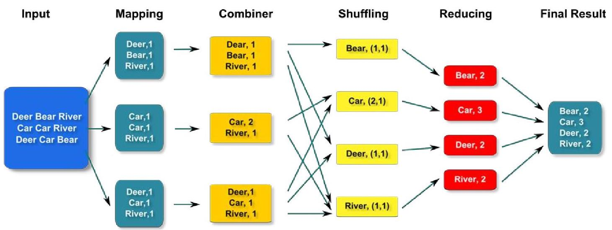

Lecture 1
Lecturer information
Lecturer : Felix Cuadrado, Ben Steer
Email : felix.cuadrado@qmul.ac.uk
|
Assessment information
5 lab quizzes = 15% (3% each)
Coursework = 20%
Final exam = 65%
|
|
An introduction to parallel programming
Parallel Computing
-
Using several processors in parallel
-
Calculation is divided, tasks computed by processors in a network, or by different cores in the same machine
Advantages
-
Faster and cheaper than using one big processor
-
Some problems may be too big to fit on one machine
-
Some problems may be too long to solve on one processor
-
And some, like Trump, can't be solved even then...
Disadvantages
-
Algorithms can be difficult to or impossible to divide into subtasks
-
Coordination between subtasks can be difficult to implement as subtasks may need results from each other to continue
Real world uses
-
Simulations:
Lightning hitting a plane, nuclear accidents etc. These things cannot be practically tested in real life
-
Predictions:
Weather, stocks, Trumps next tweet etc.
-
Data Analysis:
You're in Big Data Processing...you know what this is.
-
Marketers analyse social media for trends.
-
Search engines analyse webpages.
-
LHC analyses particles several times the size of Trumps brain etc.
|
Lecture 2
An introduction to Map/Reduce
What is map reduce?
Map Reduce is a kind of Italian soup made with fried mushrooms and....If you don't know what map/reduce is yet, go home and re-enrol in gender studies or something...or run for President of USA!
But....what is it?
*sigh...* Map reduce is a parallel programming implementation with a map phase, a shuffle phase, a reduce phase and an optional combiner phase (after map-phase, before shuffle & sort)
Thats a lot of phases, a little confused here.
Very well... It goes like this: Mapper → Combiner (if applicable) → Partitioner → Shuffle & sort → Reducer
Mapper
-
The input for a Map Reduce job is split into chunks (HDFS....later), which are divided among Mappers.
-
Each chunk is generally 128mb, making the ideal number of Mappers for a job equal to the same number of blocks the input consists of.
-
Each Mapper processes its input split on a row by row basis.
-
A Mapper takes in a row of data, transforms it as required by the task and outputs a key/value pair
-
The transformation includes selecting the data that is needed from the dataset (find features in input) and manipulating it so you get a key and its corresponding value (the Reducer contains the logic for any actual computation).
-
Data Locality Optimisation means Mappers will be assigned close in physical memory space to where the block(s) of data they are working on is. This will be covered further in lecture 3.
Shuffle and sort
-
This phase involves moving 'intermediate' values produced by Mappers to their respective Reducers
-
All output values of a given key MUST be assigned to the same Reducer. This is done by a partitioning algorithm (after Combiner, if there is one, but before shuffle)
-
Remember; hadoop is a java implementation of map/reduce by Yahoo. Map/Reduce itself is by out lord and savior Google in C++
Reducer
-
A Reducers job is to take all the key/value pairs it recieves from all the Mappers and 'reduce' them into a smaller set of values
-
This varys depending on context. In the classic word-count example a Reducer adds the values (instance of a word) for each key (word) it recieves giving the total number of instances for each word.
-
If the task had been to go through an ecommerce dataset and 'count sales'; the Mapper would select the relavent data from the dataset and the reducer would do the counting.
Combiner
-
A Combiner is an optional semi-Reducer that does part of the 'reduction' before the actual Reduce phase.
-
The Combiner class is used in between the Map class and the Reduce class to reduce the volume of data transfer between Map and Reduce. Usually, the output of the map task is large and the data transferred to the reduce task is high. Combiners are not always implemented because they do not always work; it depends on the job.
-
Where Combiners are used, there is one for each Mapper and the logic they implement is identical to Reducers of that job.
-
The only difference is, a Reducer acts on the data of all Mapper outputs, whereas a Combiner acts on the output of a single Mapper.
-
Combiners have rules they have to follow. They must be...
-
Idempotent: The number of times a combiner is applied should not change the output
-
Transititive: The order of inputs cannot change the final output.
-
Side effect free: Otherwise they wouldn't be idempotent.
-
Preserve sort order: Cannot change the keys of Mapper output to affect sort order
-
Preserve partitioning: Cannot change the keys of Mapper output to affect partitioning to the Reducers.

|
Lecture 3
Hadoop: Behind the scenes
Hadoop has much in common with the London underground system. Both are praised for their speed and service, yet neither would exist without slavery. Now we learn the ugly truth behind the pretty Map Reduce architecture, of Demons and Slaves.
Daemons
-
Hadoop works on a cluster of PC's in a network, with each PC acting as a node.
-
Demons consume the souls of the unwary. Daemons, on the other hand, are a set of programs that run in the background of a machine with a set of specific tasks.
-
Map/Reduce computing daemons: NodeManager, JobHistoryServer and ResourceManager.
-
Map/Reduce storage daemons: NameNode, DataNode and SecondaryNameNode.
Slavery: Master/worker architecture
Every hadoop network has 1 master node and many worker nodes
-
Master...
-
Is aware of all worker nodes
-
Recieves job requests from outside the cluster (jobs are easier to manage with one node doing all the managing)
-
Decides which node executes what and when
-
Communicates with worker nodes
-
Worker...
All that studying must be getting tiring, lets instead talk about some of my personal history. When I was younger I felt like a man trapped inside a womens body; but then I was born. After that it wasn't so bad being raised as an only child, though it really annoyed my brother. Probably a condom failure. I always thought Trojan was a bad name for a condom brand because of course, the Trojans were a people whose lives were ruined when a vessel containing little warriors unexpectedly exploded inside their city walls. On second thoughts it seems perfectly adequate. I’m sure wherever my Dad is he’s looking down on us. He’s not dead, just very condescending. Getting back to big data...
-
As mentioned, before we got distracted, there is one ResourceManager (Master) for each cluster of nodes.
-
This can create a bottle neck as managing an entire clusters resources is a lot of work for a single node to be doing. The resource manager fixes this by assigning 'Deputy-Masters' called ApplicationManagers.
A Resource Manager:
-
Recieves hadoop job requests from clients outside the cluster.
-
Creates ApplicationMasters.
-
One ApplicationMaster is created per job to remove the bottleneck of overloading the ResourceManager.
-
ApplicationMaster manages the resources for each indivigual job and ensures its completion.
-
ResourceManager (Master) takes care of external requests and ensures NodeManager nodes (coming up next...) stay live.
The NodeManager:
-
There is one NodeManager for each worker node to make sure the tasks set by the ResourceManager for that node are completed.
-
This means there are many NodeManagers for each ResourceManager, just as there are many workers for each master.
-
The NodeManager also sends constant 'heartbeat' messages to the ResourceManager to let it know that the node is live.
-
A Resouce manager knows when a node is dead because the hearbeat messages stop, allowing it to make the required adjustments.
The Container:
-
Worker Nodes are allocated to 'containers' (just like slaves)
-
ResourceManager then allocates containers to ApplicationMasters
-
ApplicationMasters manage the resources of the containers given to them, that is, they decide which nodes in a container do what for each Map/Reduce job.
The ApplicationMaster:
-
'Negotiates' resources for each job with ResourceManager.
-
Reports to ResourceManager about progress and completion of jobs.
-
Records the outcome of each job in the JobHistoryServer (remember that, we mentioned it earlier).
-
Is destroyed when a job is complete.
Hadoop Distributed File System (HDFS)
-
HDFS is a shared storage space for all the nodes in a cluster. Input and output of hadoop jobs live in HDFS.
-
Files are stored in 128mb blocks, with one or more blocks assigned to each Mapper.
-
The block system helps to quickly and easily distribute data to Mappers.
-
As previously mentioned, data locality optimisation means Mappers are close in physical memory space to the block they're working on.
The DataNode:
-
There is one or more per cluster
-
It stores blocks from HDFS and reports to the NameNode (coming up...) to update list of stored blocks.
The NameNode:
-
There is one per cluster.
-
It keeps an index table with the location of each block of data
-
Thats all it does. Keeps track of blocks. NameNode doesn't compute or do anything else to help, the lazy bastard.
-
As well as being lazy, it is also a single point of failure; if the NameNode fails, all goes to shit. And thats why Hadoop 2.0 introduced...
The Secondary NameNode:
-
Its only job is to store a backup of NameNode's index tables.
-
It saves the day if the NameNode goes down. No more single point of failure
Block Replication:
-
Blocks of data are replicated and written several times in HDFS.
-
The standard replication factor is 3.
-
Replica's of blocks are stored on different 'racks' and the NameNode stores the 'rack-id' of each DataNode.
-
This way, data is not lost if an entire rack goes down as other racks will contain the same blocks.
-
This makes reading data faster, as you can use the bandwidth of multiple racks. However, writing data to multiple racks is slower.
-
HDFS is not covered in much more detail than this in the lecture slides. But if you want a further understand of DataNodes communicating with each other, or racks or any of that stuff...just Google HDFS. Theres no point me copying and pasting a wiki article here.
|